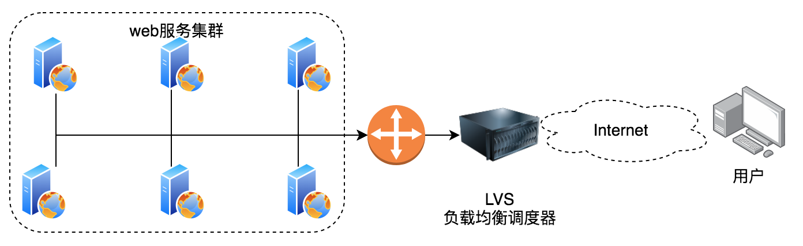
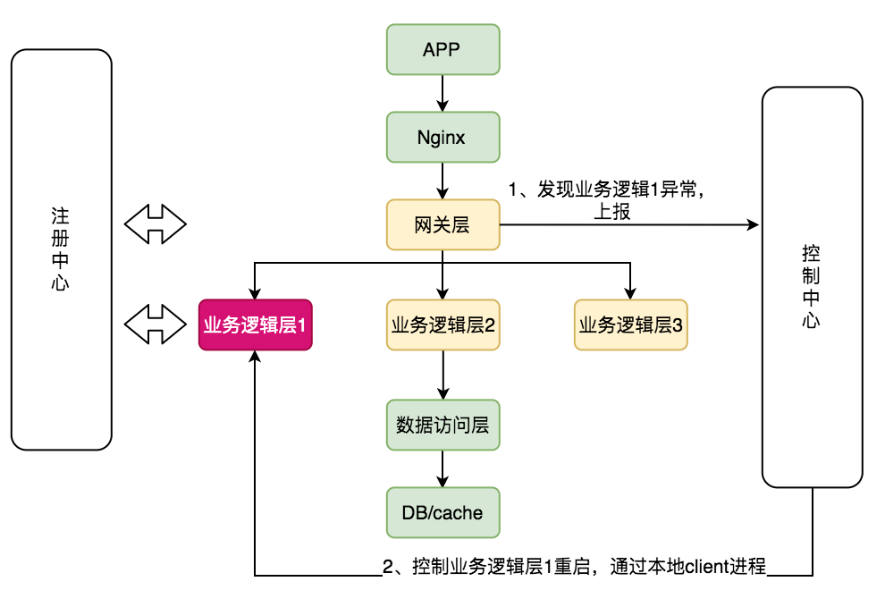
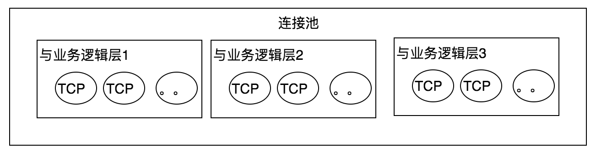

服务负载均衡设计
负载均衡系统
硬件：F10、A10、Radware
软件：LVS（4层），Nginx（7层），HAProxy（4层或7层）
反向代理、正向代理：站在用户的角度，如果用户知道这个代理存在就是正向代理，如用户不知道这个代理存储就是反向代理。
LVS

LVS（Linux Virtual Server）即Linux虚拟服务器，是由章文嵩博士主导的开源负载均衡项目，目前LVS已经被集成到Linux内核模块中。该项目在Linux内核中实现了基于IP的数据请求负载均衡调度方案，其体系结构如上图所示，终端互联网用户从外部访问公司的外部负载均衡服务器，终端用户的Web请求会发送给LVS调度器，调度器根据自己预设的算法决定将该请求发送给后端的某台Web服务器。整个转发过程对用户是透明的。根据LVS工作模式的不同，真实服务器会选择不同的方式将用户需要的数据发送到终端用户，LVS工作模式分为NAT模式、TUN模式、以及DR模式。
1、VS/NAT(Virtual Server via Network Address Translation)，即网络地址翻转技术实现虚拟服务器。当请求来到时，LVS将数据报文中的目标地址（即虚拟IP地址）改成具体的某台Web Server，端口也改成Web Server的端口，然后把报文发给Web Server。Web Server处理完数据后，需要返回给LVS，然后LVS服务将数据包中的源地址和源端口改成VIP的地址和端口，最后把数据发送出去。由此可以看出，用户的请求和返回都要经过LVS Server，如果数据过多，LVS Server肯定会不堪重负。工作在网络层。
2、VS/TUN（Virtual Server via IP Tunneling），即IP隧道技术实现虚拟服务器。它跟VS/NAT基本一样，但是Web Server是直接返回数据给客户端，不需要经过LVS Server，这大大降低了LVS Server的压力。
3、VS/DR（Virtual Server via Direct Routing），即用直接路由技术实现虚拟服务器。跟前面两种方式，它的报文转发方法有所不同，VS/DR通过改写请求报文的MAC地址，将请求发送到Web Server，而Web Server将响应直接返回给客户，免去了VS/TUN中的IP隧道开销。这种方式是三种负载调度机制中性能最高最好的，但是必须要求Web Server与LVS Server都有一块网卡连在同一物理网段上。工作在数据链路层。
负载均衡算法
Random：随机，按权重设置随机概率
RoundRobin：轮询，按约定的权重设置轮询比率
ConsistentHash：一致性Hash，相同参数的请求总是发送到统一提供者。存在节点漂移的问题。强一致不能采用一致性hash。
节点漂移问题：节点A异常，数据迁移到节点B上，当节点A恢复后又加入，A上可能存在脏数据。
广义负载均衡
广义的负载均衡是指有完整的故障处理恢复机制：故障自动发现、故障服务自动摘除、请求自动重试、服务恢复自动发现。
1、谁来发现服务故障？如果仅仅靠注册中心来发现服务故障，很难发现服务假死的情况（服务不可用，但心跳正常，心跳线程和服务线程肯定不会是一个）。谁最痛谁去推动，所以可采用由调用者去发现服务异常。
2、如何判断服务故障？统计最近的服务调用情况，失败或超时高于30%时，服务即故障。
3、如何通知服务重启？发送通知给控制中心，由控制中心触发重启。控制中心在每台机器上面都有一个client进程，通过client进程对主机进行管控。
4、如何重启？jstack 2次，kill 进程，sleep 6s，start进程。之所以要sleep一段时间，是让注册中心发现服务异常，然后从注册中心中踢出。
6、如何实现服务恢复自动发现？依靠注册中心，服务恢复后又把自己注册到注册中心，上游服务通过watch机制发现服务，然后建立与该服务的连接。

7、请求自动重试：服务熔断后，可以慢慢放一些流量去调用着试试，如果服务是好的可以慢慢恢复访问，如果服务仍然异常，可以继续熔断。
一、业务逻辑层
1、向注册中心注册服务，与注册中心建立心跳
2、处理来自网关层的服务请求
二、网关层
1、从注册中心获取服务，并通过watch机制监控服务的变化情况
2、服务分主机以TCP的形式建立长连接池

3、接收从nginx过来的请求，通过一定的负载均衡策略，选择某一个业务逻辑层，调用服务
4、统计每1秒每个业务逻辑层的调用情况，失败和超时超过30%，即认为该业务逻辑层故障
5、某业务逻辑层故障后网关层删除连接池中与该业务逻辑层的连接（具体实现时，考虑到请求自动重试功能，不删除而只是标示成不可用），此时注册中心并没有发现业务逻辑挂了
6、通知控制中心某业务逻辑层异常
三、控制中心
1、收到网关层上报的某业务逻辑层异常后，通知系统管理员
2、重启该业务逻辑层，通过控制中心在每台主机上的客户端执行
保留现场（间隔几秒jstack 2次，可用来比较线程状态）；kill 进程；sleep 6s；start 进程
（间隔6秒是因为：zk心跳是2s一次，如果连续3次没有收到异常，才认为服务异常，然后删除节点。如果很快就重启完了，注册中心就不能感知到服务的异常）。
因为网关层会部署多个，那么可能出现多个网关层向控制中心上报业务逻辑层的异常，如何处理？控制中心收到相同的异常处理请求后，短时内不重复处理，比如10分钟。
四、网关层
1、业务逻辑层重启完成后，会重新注册到注册中心
2、网关层通过watch机制就能感知到业务逻辑层的变化，然后重新向业务逻辑层建立连接，这就完成了服务恢复的自动发现